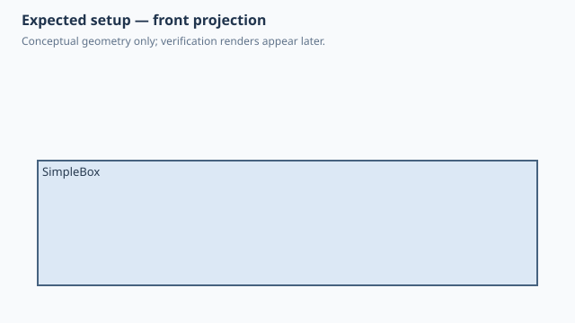

← Qualification / Parameterized Box
Forge qualification case
NOT RUNQ1 Q2 documented
Parameterized Box
1. Test setup

Test goal
Establish the smallest model/parameter contract: three public Python fields create one editable native box.
Pass criteria
One rectangular solid with the requested 40 x 30 x 10 mm dimensions and an error-free timeline.
2. Implementation under test
Fixture source
"""Smallest SCPF regression example: one parameterized, editable Box."""
class SimpleBox:
length = 40.0
width = 30.0
height = 10.0
def build(self):
return Box(self.length, self.width, self.height)
SimpleBox()
Public Forge API used
class fields -> Parameter; Box(length, width, height); build()
Forge model represented by this fixture
One root Shape with symbolic length, width and height; no occurrence or assembly layer.
3. Generated SolidCraft relationship
parameters.add for the public dimensions, followed by the native sketch/extrude commands used for Box.
Show generated relationship / command details
parameters.add
parameters.add
parameters.add
sketch.create
sketch.rectangle.two_point
sketch.finish
solid.extrude3. Results
Native result data was not supplied to this site build. Run the native qualification for measured results.
No source-matched native verification was supplied to this site build. The case sheet and command contract are still shown.
6. Evidence and references
Raw evidence
Show generated files and measurements
Reference models
These comparisons clarify concepts; Forge does not promise API compatibility with them.
- OpenSCAD: cube([40,30,10]) is the constructive-geometry baseline; Forge differs by preserving editable SolidCraft history.